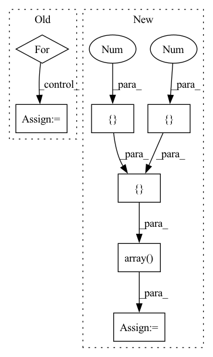

Pattern ID :38090
Before Change
for i in range(rows):
for j in range(cols):
pillar_matrix[i][j] = len(pillar_matrix[i][j])
true_pillar_matrix = [
[2, 1, 0],After Change
points, indices = create_pillars(points, grid_cell_size=grid_cell_size, x_min=x_min, x_max=x_max,
y_min=y_min, y_max=y_max, z_min=z_min, z_max=z_max)
true_indices = np.array([ [0, 0],
[0, 0],
[0 , 1[ 1, 2 ]
)
assert np.all(indices == true_indices)
In pattern: SUPERPATTERN
Frequency: 3
Non-data size: 7
Instances Fragment ID: 109177472
Project Name: jabb0/fastflow3d
Commit Name: fa5213b611fd96c6e2df69f237b25e47cca3be34
Time: 2021-06-13
Author: aron.distelzweig@hotmail.com
File Name: tests/test_pillar.py
M Class Name: AnonimousClass
N Class Name: AnonimousClass
M Method Name: test_create_pillars(0)
N Method Name: test_create_pillars(0)
M Parent Class:
N Parent Class:
M File Name: tests/test_pillar.py
N File Name: tests/test_pillar.py
M Start Line: 9
M End Line: 34
N Start Line: 9
N End Line: 38
Before Change
// If they exist, plot all our loose input constraints (i.e., our one-step backprojection set estimates)
// TODO: Make plotting these optional via a flag
for info in kwargs.get("per_timestep", []):
ic = info.get("one_step_backprojection_overapprox", None)
if ic is None: continue
rect = ic.plot(self.partitioner.animate_axes, self.partitioner.input_dims, self.estimated_one_step_backprojection_set_color, zorder=self.estimated_one_step_backprojection_set_zorder, linewidth=self.partitioner.linewidth, plot_2d=self.partitioner.plot_2d)
self.partitioner.default_patches += rect
//// Sketchy workaround to trajectories not showing up
// import nn_closed_loop.constraints as constraintsAfter Change
import numpy as np
import nn_closed_loop.constraints as constraints
x0 = np.array(
[ // (num_inputs, 2)
[-5.5 , -4.5[ -0.5, 0.5 ]
)
// x0 = np.array( // tree_trunks_vs_quadrotor_12__
// [ // (num_inputs, 2)
// [-6.5,-0.25, 2, 1.95, -0.01, -0.01],
// [-6, 0.25, 2.5, 2.0, 0.01, 0.01],
// ]
// ).T
// x0 = np.array(
// [ // (num_inputs, 2)
// [-0.5, 0.5],
// [-0.5, 0.5],
// [-0.01, 0.01],
// [-0.01, 0.01],
// ]
// )
// x0 = np.array(
// [ // (num_inputs, 2)
// [-2-0.25, -4+0.25], // x0min, x0max
// [-3., 3.], // x1min, x1max
// [0.49, 0.50],
// [-0.01, 0.01]
// ]
// )
x0_constraint = constraints.LpConstraint(
range=x0, p=np.inf
)
input_dims = [x["dim"] for x in inputs_to_highlight]
self.dynamics.show_trajectories(
len(input_constraints) * self.dynamics.dt,
x0_constraint,
input_dims=input_dims,
ax=self.partitioner.animate_axes,
controller=self.propagator.network,
zorder=10
)
// initial_range = np.array( // tree_trunks_vs_quadrotor_12__
// [ // (num_inputs, 2)
// [-6.5, 0.25-0.25, 2, .95, -0.01, -0.01],
// [-6, 0.25+0.25, 2.5, 1.0, 0.01, 0.01],
// ]
// ).T
initial_constraint = constraints.LpConstraint(x0)
self.partitioner.plot_reachable_sets(
initial_constraint,
input_dims, Fragment ID: 109178369
Project Name: mit-acl/nn_robustness_analysis
Commit Name: aed9f9b4eef5ac9826f2323736ec43eddc8ef5df
Time: 2022-04-01
Author: nrober1122@gmail.com
File Name: nn_closed_loop/nn_closed_loop/analyzers/ClosedLoopBackwardAnalyzer.py
M Class Name: ClosedLoopBackwardAnalyzer
N Class Name: ClosedLoopBackwardAnalyzer
M Method Name: visualize_single_set(10)
N Method Name: visualize_single_set(10)
M Parent Class: analyzers.Analyzer
N Parent Class: analyzers.Analyzer
M File Name: nn_closed_loop/nn_closed_loop/analyzers/ClosedLoopBackwardAnalyzer.py
N File Name: nn_closed_loop/nn_closed_loop/analyzers/ClosedLoopBackwardAnalyzer.py
M Start Line: 218
M End Line: 280
N Start Line: 200
N End Line: 326
Before Change
for i in range(rows):
for j in range(cols):
pillar_matrix[i][j] = len(pillar_matrix[i][j])
true_pillar_matrix = [
[2, 1, 0],After Change
points, indices = create_pillars(points, grid_cell_size=grid_cell_size, x_min=x_min, x_max=x_max,
y_min=y_min, y_max=y_max, z_min=z_min, z_max=z_max)
true_indices = np.array([ [0, 0],
[0, 0],
[0 , 1[1 , 2
)
assert np.all(indices == true_indices)
Fragment ID: 109177477
Project Name: jabb0/fastflow3d
Commit Name: fa5213b611fd96c6e2df69f237b25e47cca3be34
Time: 2021-06-13
Author: aron.distelzweig@hotmail.com
File Name: tests/test_pillar.py
M Class Name: AnonimousClass
N Class Name: AnonimousClass
M Method Name: test_create_pillars(0)
N Method Name: test_create_pillars(0)
M Parent Class:
N Parent Class:
M File Name: tests/test_pillar.py
N File Name: tests/test_pillar.py
M Start Line: 9
M End Line: 34
N Start Line: 9
N End Line: 38
Before Change
"num_ivy_arrays_on_dev",
]
for k, v in ivy.__dict__.copy().items():
if k in to_skip or helpers.docstring_examples_run(v):
continue
success = False
failures.append(k)
if not success:
warnings.warn(After Change
x = ivy.native_array([[1., 2.], \
[4., 5.], \
[7., 8.]])
y = ivy.array([ [1. ], \
[0. ], \
[0.])
z = ivy.cross(x, y, axis=0)
print(x.shape[-1], x.shape[-1])
print(z)
Fragment ID: 109178509
Project Name: ivy-dl/ivy
Commit Name: 0b73f9b977b24ab3c32d7438f7e6cc86f9c0e385
Time: 2022-06-25
Author: rishabhkkumarsc1@gmail.com
File Name: ivy_tests/test_docstrings.py
M Class Name: AnonimousClass
N Class Name: AnonimousClass
M Method Name: test_docstrings(1)
N Method Name: test_docstrings(1)
M Parent Class:
N Parent Class:
M File Name: ivy_tests/test_docstrings.py
N File Name: ivy_tests/test_docstrings.py
M Start Line: 16
M End Line: 52
N Start Line: 52
N End Line: 60